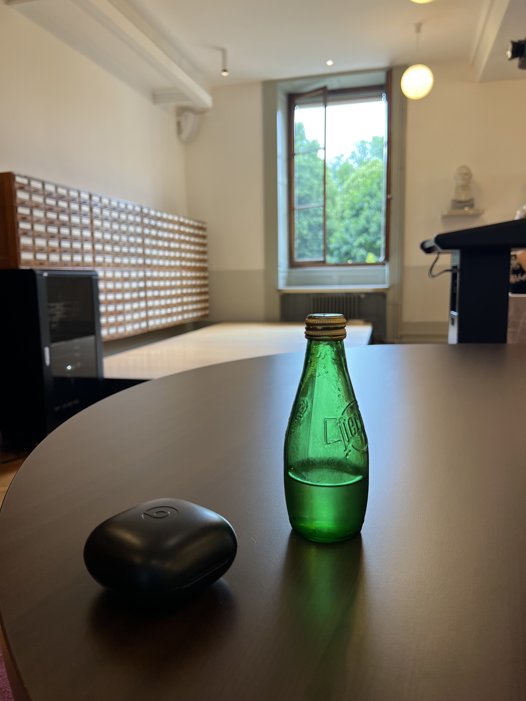

Vieille Ville · Geneva · Switzerland
Bibliothèque de Genève
Places you can work on a laptop that aren't cafés are important. This library is one of Geneva's best-kept secrets.
Places you can work with a laptop that aren't cafés are important to me. Libraries are usually a great option, and this one is no exception. It's part of the University of Geneva but open to the public for free — walk in, find a table, get to work. No membership, no card, no fuss.
The building is beautiful and the atmosphere is genuinely quiet. The card catalogue wall alone is worth a look. Outside is Parc des Bastions — the old park that runs along the old city walls — so you can break for air without going anywhere ugly. A very nice place for a focused few hours.
"Walk in off the street. Find a table. The park is outside when you need a break. Free."

Write a few lines. Add some photos. We turn it into a proper travel article. Next time someone asks you for a recommendation, you'll have a link.